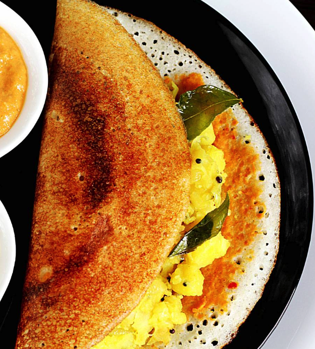

Plain Dosa
Crispy and golden-brown dosa made with fermented batter, perfect for pairing with chutney or sambar. Learn the art of making the perfect plain dosa at home.
View Recipe

Masala Dosa
Flavored with a spicy potato filling, this iconic South Indian dish is a crowd favorite. Try this recipe for a hearty and flavorful masala dosa.
View Recipe